CKAD Note Section 8 State Persistence
Contents
105. Volumes
hostPath
這個範例 mount worker-node 的 /data 進 pod 裡面，並且 mapping 到 container 裡面的 /test-pd。
實際上我們並不會這樣做，因為 worker-node 之間的資料並沒辦法同步，一般來說會使用 shared storage 例如: NFS, ClusterFS, Ceph, AWS EBS, AzureDisk ….
|
|
106. Persistent Volumes
Persistent Volumes 將 Storage (Disk) 抽象化，供上層 PVC (Persistent Volume Claim) 使用。並且擁有自己的 lifecycle (pv.spec.persistentVolumeReclaimPolicy)
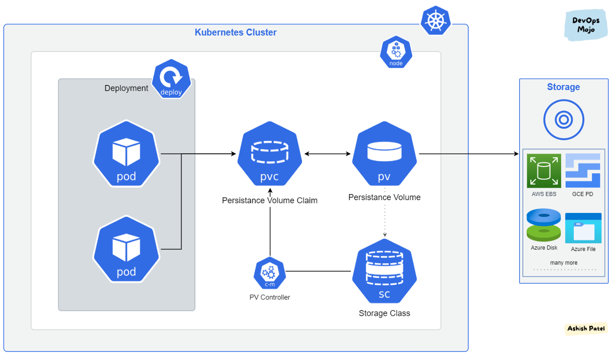
▲ Persistent Volume 與 PVC 關係示意圖。 圖片來源
|
|
一樣要再講一次， hostPath 測試環境 Only (local filesystem)
|
|
107. Persistent Volume Claims
- Persistent Volume 與 Persistent Volume Claim 是 1:1 的關係。
- PV 與 PVC 在 Kubernetes namespace 當中是不同的物件。
- PVC 透過 YAML 定義的
Sufficient Capacity,Access Modes,Volume Modes,Storage Class去尋找合適的 PV 對應 (配對成功!)。 - (承上) 或者增加
selector直接給定指定 PV。
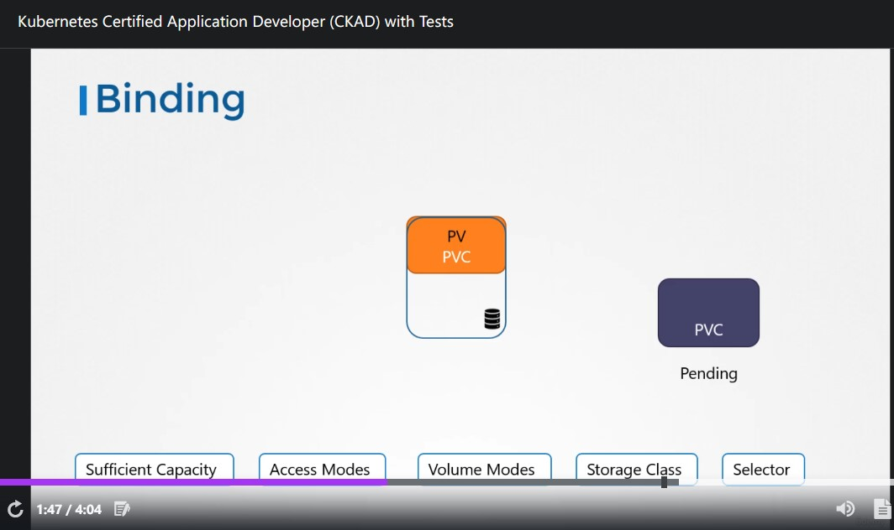
▲ 可能的情形就是 PVC matching 到的 PV 比 PVC 定義所需的空間還大，由於 1:1 的關係，剩餘的空間沒辦法給其它 PVC 使用
|
|
|
|
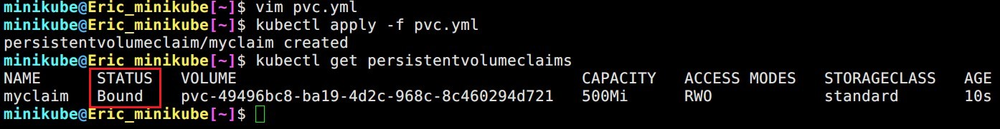
▲ 驗證即使沒有使用 selector ，條件配對成功還是可以的 (STATUS == Bound)
pv.spec.persistentVolumeReclaimPolicy 定義當 PV 不被 PVC 使用時，該怎麼被處理。
|
|
- (Default) Retain: 除非被 Administrator 刪除，不然保留 而且不被其它 PVC 使用。
- 【Deprecated】Recycle: 刪除 PV 底下的資料 (
rm -rf /thevolume/*) 可以被其它 PVC 使用。 - Delete: 直接刪除 PV。
recycle 已被 deprecated 的 Announcement: Re: Persistent Volume Recycler Deprecation Annoucement
PVC 宣告完之後 pod 或者其它 K8s Object 要怎麼使用呢? 這邊有範例:
|
|
(CKAD 不考) 112. Storage Classes
每次創 PVC 之前都要先創建 PV 很煩、很不自動，怎麼辦 ? Storage Classes 可以讓你在建立 PVC 時順便幫你建好 PV~
vSphere, ProxmoxVE 的 provisor 都有內建在 K8s 裡面!!
|
|
▲ vSphere 的 Storage Class
|
|
▲ 在建立 PVC 的時候加入 storageClassName: vsphere 就可以使用囉!
(CKAD 不考) 114. Why Stateful Sets?
作者用 MySQL DB 做 HA 架構來解釋為什麼需要 StatefulSet，總共三台 instance (master and two slaves) 分別有這些要求:
- Setup master first and then slaves. (第一個被 部屬/設定 的必須是 master，接著 slave)
- Clone data from master to
slave-1. (slave-1必須從 master 拉資料) - Enable continouous replication from master to
slave-1. (持續從 master sync data 到 slave) - Wait for
slave-1to be ready. (等待slave-1準備好可以被使用) - Clone data from
slave-1toslave-2. (為了避免造成 master 網路上的負擔，slave-2必須先從slave-1拉資料) - Enable continouous replication from master to
slave-2. (持續從 master sync data 到 slave) - Configure master node address on slave. (因為 sync 必須知道誰是 master)
Deployment
Deployment裡面的pod沒辦法保證順序，也因此無法定義 Master。- Slaves 無法透過 IP address 或者 hostname, DNS domain name 去找 master 做 sync；反之亦然。 (
podname 有隨機產生的部分，Evernote 筆記有:kubernetes (k8s) Deployment 是直接納管 pods 嗎? 還是透過 replica set (rs))
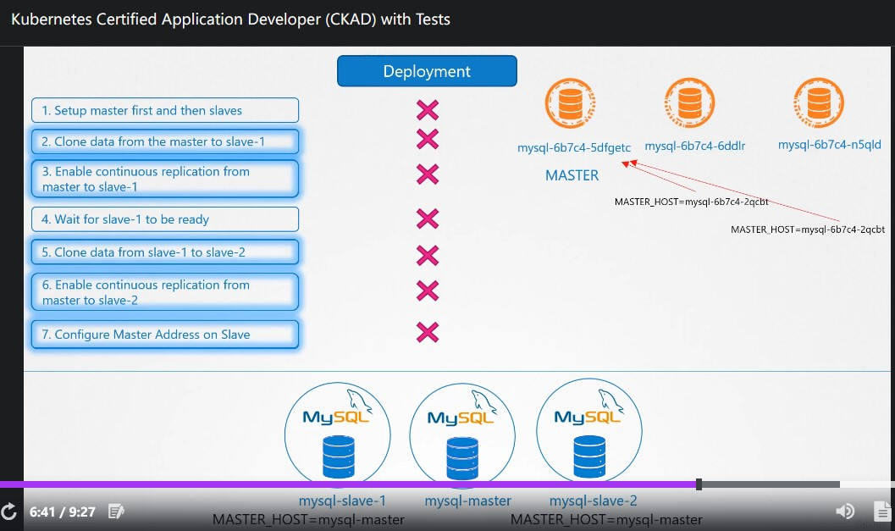
▲ Deployment 做不到上述要求，宣告失敗!
Stateful Sets
pod會被依序建立。StatefulSet會指定有序的 index 給每一個pod
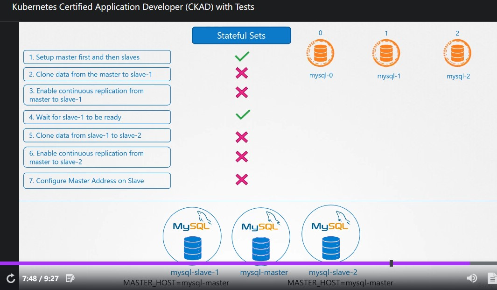
▲ 每個 pod 都掛依序掛編號，解決 pod name 有隨機產生的部分問題。即使 pod 被 re-create 名稱也不會跑掉~
(CKAD 不考) 115. Stateful Sets Introduction
StatefulSet (開頭兩個 S 都是大寫) 與 Deployment 87% 像~
.spec.serviceName 的部分是搭配 Headless service (後面會提到)
|
|
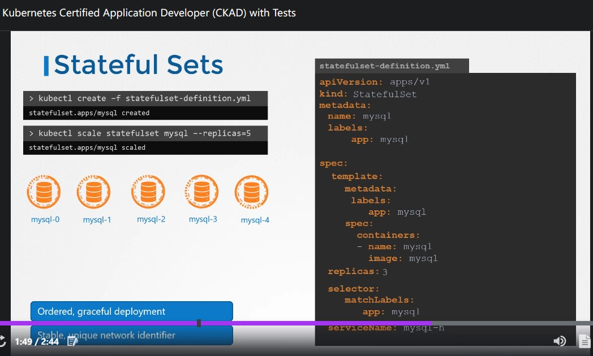
▲ kubectl scale statefulset mysql --replicas=5 也會依序增加，並給予獨特 pod name；down scale 反之亦然
如果你只想享受 StatefulSet 帶來指定、獨一無二 的 pod name 而不想讓它按照順序 scale up/down pod 時 (包含第一次產生)
可以設定 .spec.podManagementPolicy == Parallel 詳細參考 Pod Management Policies
(CKAD 不考) 116. Headless Services
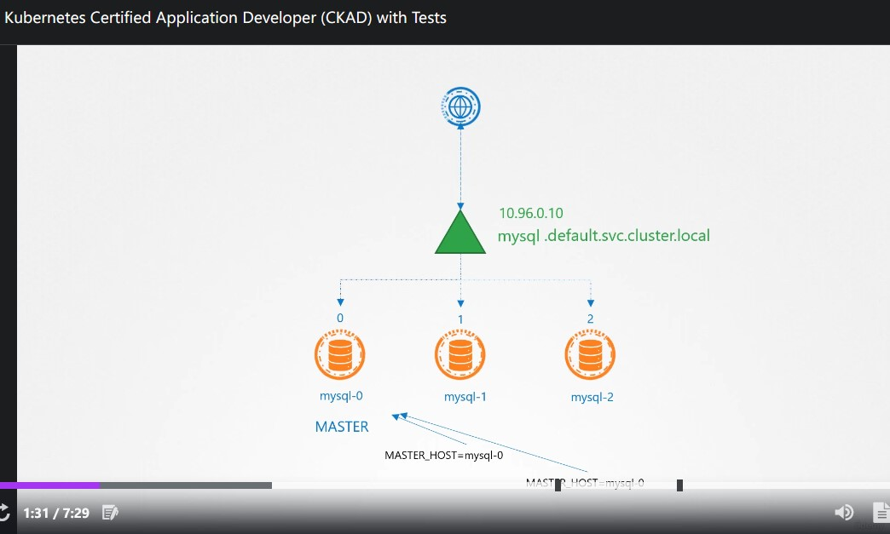
▲ 一般的 service 長這樣。其它位於 K8s cluster 內的 app 可以透過 mysql-default.svc.cluster.local 訪問 MySQL。
還記得這是 MySQL 服務嗎? Master 可以 R/W 沒問題，但是 Slaves 只能 R
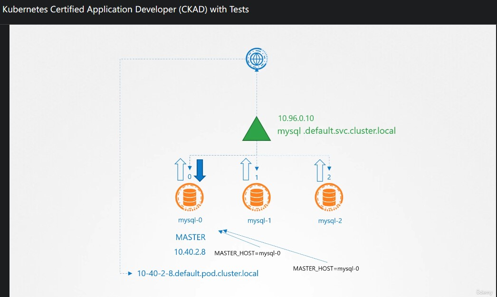
▲ Deployment 內，每個 pod 的 IP Address 的 DNS A record 長這樣: 10-40-2-8.default.pod.cluster.local 不過 IP Address 是變動的
這時候就需要 Headless service 了!
Headless service不做 Load Blance，只幫每一個pod按照順序創造獨一無二的 DNS domain name。- 格式如下:
<pod_name>.<headless_service_name>.<namespace>.<svc>.<cluster_domain>。
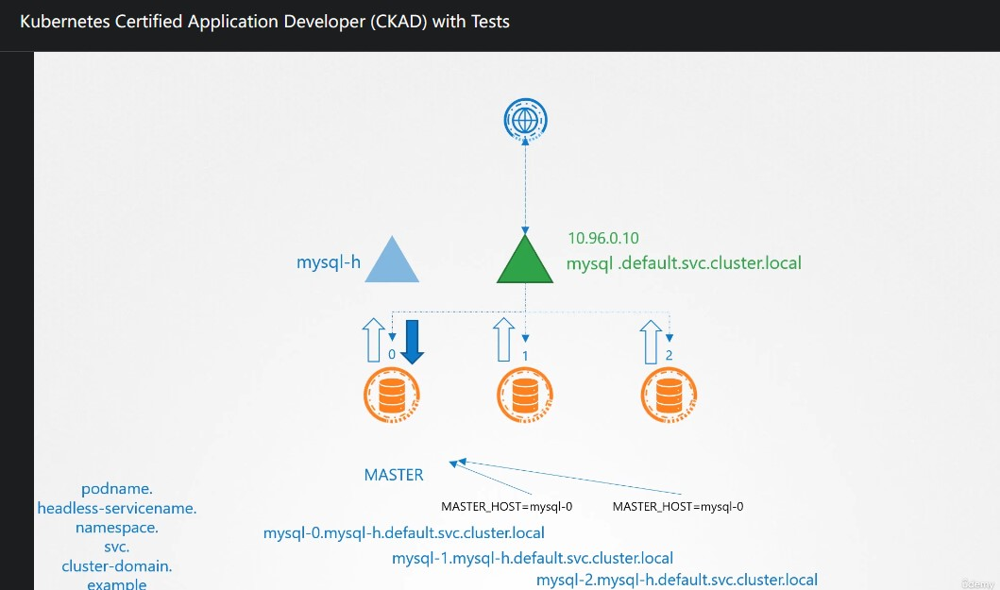
▲ 各個 pod 的 DNS domain name 如上~
Headless service 與一般 service 的差異只在於 .spec.clusterIP == None
|
|
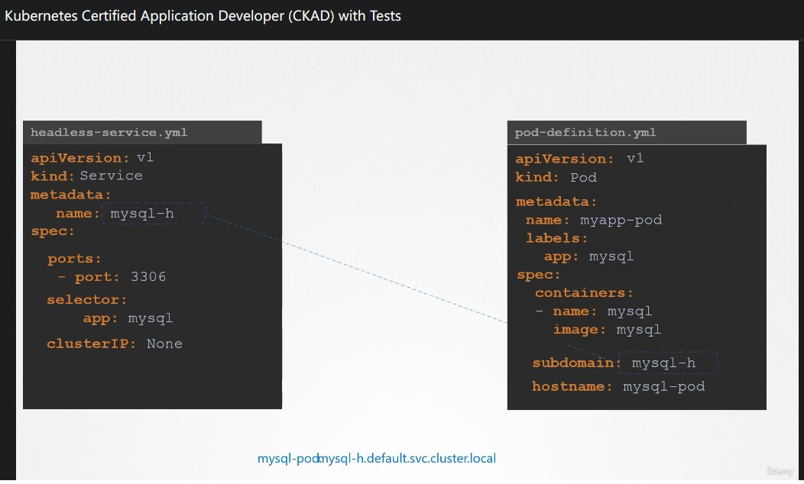
▲ 如果是使用 pod 搭配 Headless service 的話必須加 .spec.subdomain, .spec.hostname
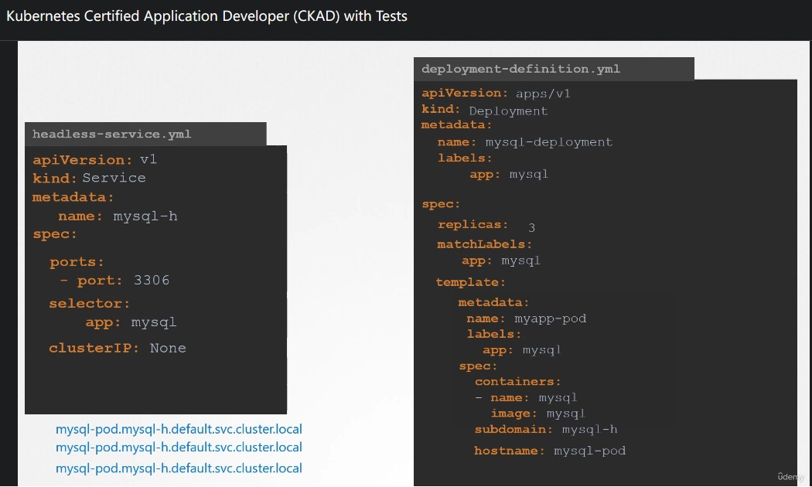
▲ 如果我們在 Deployment 當中給定 .spec.template.spec.hostname 的話，整個 DNS A record 都會一樣 (左下角)。
這也是改用 StatefulSet 的好處之一，我們不需要去定義 .spec.subdomain, .spec.hostname，而是透過 .spec.serviceName 去連結 Headless servie
(CKAD 不考) 117. Storage in StatefulSets
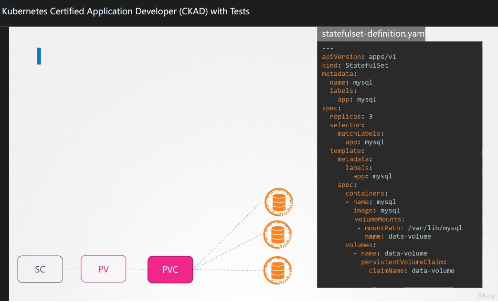
▲ 在 StatefulSet 沒有使用 .spec.volumeClaimTemplates 的話，三個 MySQL pod 都會共用同一個 PVC。
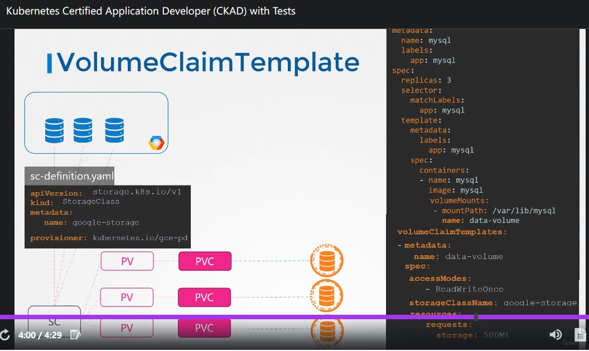
▲ 用上 .spec.volumeClaimTemplates 就會長這樣，其中 .spec.volumeClaimTemplates 的內容就是 PVC 啦~
不過當 pod 因為某些原因被 re-create 的話，它將延續使用舊有 PVC
問問筆記
大家好，我想請問一個關於 StatefulSet 使用 .spec.volumeClaimTemplates 的問題:
以這個範例來說會產生三個 pod (假設叫做 pod{1..3})，當 pod1 因為某些原因被 re created 了，它將延續使用舊有的 PVC。
如果我不想呢? 想給 pod1 全新的一個 PVC
請問有什麼做法呢?
如果在 PVC .spec.persistentVolumeReclaimPolicy 設定 Recycle/Delete 是不是可行? 謝謝
範例: https://kubernetes.io/docs/concepts/workloads/controllers/statefulset/#components
Ans:
不行，Policy 定義的是當 PVC 消失後 PV 被怎麼處理。而且這個需求與 StatefulSet 反其道而行。
Hiskio-Kubernetes
Author 老柯
LastMod 2022-06-09 (767ceb7)